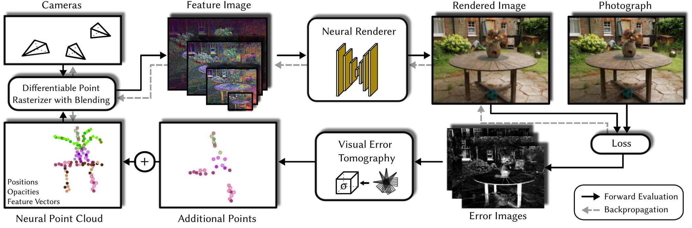

VET: Visual Error Tomography for Point Cloud Completion and High-Quality Neural Rendering Siggraph Asia 2023
-
Linus Franke
FAU Erlangen-Nürnberg
-
Darius Rückert
FAU Erlangen-Nürnberg
Voxray GmbH -
Laura Fink
FAU Erlangen-Nürnberg
Fraunhofer IIS -
Matthias Innmann
NavVis GmbH
-
Marc Stamminger
FAU Erlangen-Nürnberg
Abstract
In the last few years, deep neural networks opened the doors for big advances in novel view synthesis. Many of these approaches are based on a (coarse) proxy geometry obtained by structure from motion algorithms. Small deficiencies in this proxy can be fixed by neural rendering, but larger holes or missing parts, as they commonly appear for thin structures or for glossy regions, still lead to distracting artifacts and temporal instability. In this paper, we present a novel neural-rendering-based approach to detect and fix such deficiencies. As a proxy, we use a point cloud, which allows us to easily remove outlier geometry and to fill in missing geometry without complicated topological operations.
Keys to our approach are (i) a differentiable, blending point-based renderer that can blend out redundant points, as well as (ii) the concept of Visual Error Tomography (VET), which allows us to lift 2D error maps to identify 3D-regions lacking geometry and to spawn novel points accordingly. Furthermore, (iii) by adding points as nested environment maps, our approach allows us to generate high-quality renderings of the surroundings in the same pipeline. In our results, we show that our approach can improve the quality of a point cloud obtained by structure from motion and thus increase novel view synthesis quality significantly. In contrast to point growing techniques, the approach can also fix large-scale holes and missing thin structures effectively. Rendering quality outperforms state-of-the-art methods and temporal stability is significantly improved, while rendering is possible at real-time frame rates.
Video
Pipeline
Overview of our neural rendering pipeline with visual error tomography.
Point descriptors, positions and opacities are optimized via backpropagation, which automatically removes outliers during training. After initial convergence, our VET is used to predict missing 3D points from the error images. Following, the optimization is resumed until the next convergence. This process is repeated 1-3 times depending on scene complexity.
Result: Point Cloud Completion and Rendering
Intial point clouds are missing details, thus rendering is impacted heavily. Our pipeline produces convincing renderings through point cloud completion.Result: Dense Point Cloud Completion and Cleaning
Garden [Barron 2022]The initial COLMAP reconstruction is missing fine details and has outliers through fuzzy edges. Completion via VET and cleaning via opacity optimization fixes that.
Result: Sparse Point Cloud Completion
COLMAPs sparse reconstruction can be efficiently completed.
Result: Rendering
Playground [Knapitsch 2017]
Lighthouse [Knapitsch 2017]
Citation
Acknowledgements
The authors thank the anonymous reviewers for their valuable feedback and Lukas Meyer for the Cherry Tree scene. Additionally, we thank Stefan Romberg, Michael Gerstmayr and Tim Habigt for the fruitful discussions as well as NavVis GmbH for providing datasets for testing.Linus Franke was supported by the Bayerische Forschungsstiftung (Bavarian Research Foundation) AZ-1422-20. The authors gratefully acknowledge the scientific support and HPC resources provided by the Erlangen National High Performance Computing Center (NHR@FAU) of the Friedrich-Alexander-Universität Erlangen-Nürnberg (FAU) under the NHR project b162dc. NHR funding is provided by federal and Bavarian state authorities. NHR@FAU hardware is partially funded by the German Research Foundation (DFG) – 440719683.
The website template was adapted from Zip-NeRF, who borrowed from Michaël Gharbi and Ref-NeRF. Image sliders are from BakedSDF.
References
[Müller 2022] Müller, T., Evans, A., Schied, C. and Keller, A., 2022. Instant neural graphics primitives with a multiresolution hash encoding
[Rückert 2022] Rückert, D., Franke L., and Stamminger M. 2022. "Adop: Approximate differentiable one-pixel point rendering." ACM Transactions on Graphics (ToG) 41.4 (2022): 1-14.
[Barron 2022] Barron, Jonathan T., et al. "Mip-nerf 360: Unbounded anti-aliased neural radiance fields." Proceedings of the IEEE/CVF Conference on Computer Vision and Pattern Recognition. 2022.
[Knapitsch 2017] Knapitsch, Arno, et al. "Tanks and temples: Benchmarking large-scale scene reconstruction." ACM Transactions on Graphics (ToG) 36.4 (2017): 1-13.